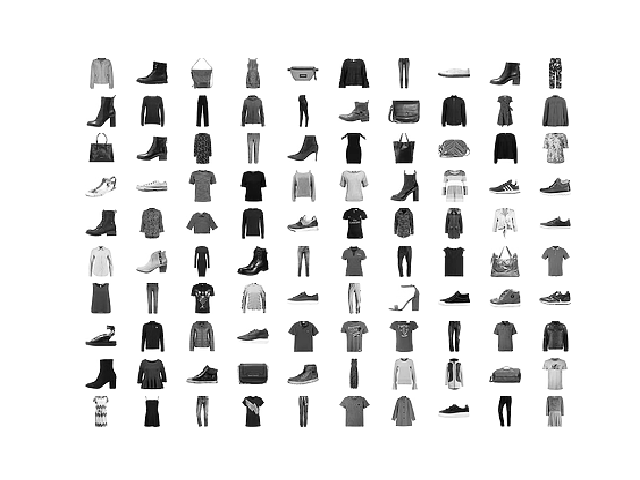
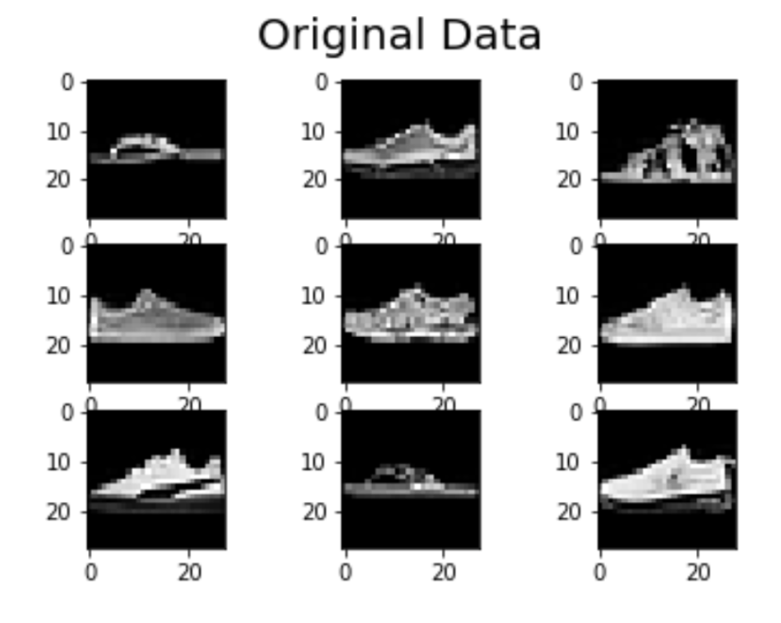
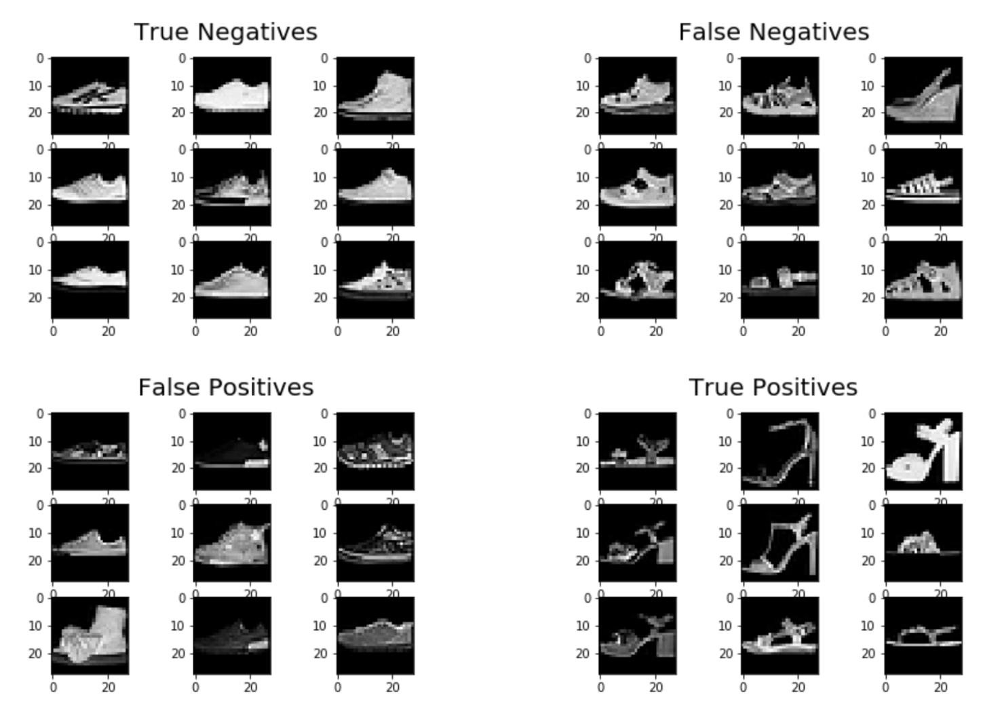

MNIST Sneaker vs Sandal Classifier

Description
The objective of this project was to develop a binary classifier (logistic regression) to classify images from the MNIST fashion dataset as either sneakers (0) or sandals (1).Details
Date: March 2020 - May 2020Related: #MachineLearning #Regression #Classifier
Language(s): Python

From the preview images to the right, we can make a few observations:
- prevalence of highly concentrated white pixels in certain central regions
- sandals have a lot of negative space
- height of shoe vs sandal
- shape of shoe vs sandal
- bottom vs upper part of the shoe is typically colored differently
- logos and patterns prevalent on seakers

Afer aseembling a baseline classifier, I obtained an accuracy score of 96.75%. I plotted some of the misclassified images in confusion matrix
format above.
One of the key learnings of this project was the importance of feature engineering. Below are some of the data augmentation tactics I utilized to maximize the accuracy of my classifier:
One of the key learnings of this project was the importance of feature engineering. Below are some of the data augmentation tactics I utilized to maximize the accuracy of my classifier:
- Count black and white pixels
- Flip images horizontally (left-right)
- Flip images vertically (up-down)
- Make a histogram of brightness intensities to capture graphic patterns on sneakers